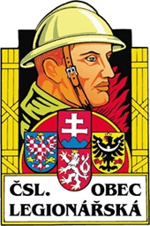
Znak Československé obce legionářské
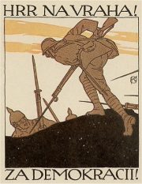
Pohlednice Vojtěcha Preissiga
|
OBRAZ 1. SVĚTOVÉ VÁLKY
První světová válka zasáhla do života všech obyvatel. Půl milionu vojáků padlo, čtvrt milionu se vrátilo invalidních, zbytek národa strádal hmotným nedostatkem a psychickými útrapami. Češi nechtěli bojovat za zájmy Habsburků, a proto často přebíhali na opačnou stranu fronty. Brzy se zformoval zahraniční i domácí odboj, přestože úřady zavedly přísnou cenzuru a za protirakouskou činnost hrozilo vězení i trest smrti. Odvážným vystoupením byl tzv. manifest spisovatelů (Projev českých spisovatelů českému poselstvu na říšské radě) z května 1917, ve kterém Jaroslav Kvapil a další dvě stovky podepsaných požadovalo propuštění politických vězňů nebo svobodu tisku, shromažďování a evropských národů.
Otřesné zážitky z fronty i zázemí se ve svých dílech snažila reflektovat většina spisovatelů. Nejvýraznějším proudem byla tzv. legionářská literatura. Legie se významnou měrou zasloužily o vznik samostatného československého státu. V době první republiky se dá hovořit přímo o státním legionářském kultu – váleční hrdinové dostávají vysoká vyznamenání, tisknou se poštovní známky s legionářskými motivy, vzniká řada uměleckých děl na toto téma, stavějí se pomníky legionářům, zasloužilí legionáři získávají významné posty nejen v armádě, vycházejí legionářské časopisy, knihy o legiích se počítají na stovky atd. Legie ve svých dílech oslavovali spisovatelé Rudolf Medek, Josef Kopta nebo Jaroslav Kratochvíl. Prošel jimi i František Langer nebo Jaroslav Hašek.
Tématu války se věnovali také další spisovatelé jako Vladislav Vančura, Jaromír John, Božena Benešová, Fráňa Šrámek nebo Josef Váchal.
Protirakouské plakáty a pohlednice vytvářel malíř Vojtěch Preissig. Pomníkovou tvorbou se zabýval sochař Otto Gutfreund.
|
Československé legie
Během 1. sv. války přesvědčili členové exilové vlády představitele Dohody, aby umožnili vznik zahraničních vojenských jednotek – československých legií. Tito dobrovolníci bojovali proti centrálním mocnostem. Nejtěžší postavení měli legionáři na východní frontě. Ruští zajatci živořili v bídných poměrech, a proto rádi nastoupili do legií, když ale Rusko uzavřelo separátní mír, nemohli v bojích pokračovat. Začala složitá anabáze vojáků na východ (do Vladivostoku, USA a Evropy) provázená vypuknuvší občanskou válkou. Domů legionáři dorazili až několik let po skončení 1. sv. války.
Co víš o 1. světové válce?
Kteří čeští spisovatelé byli za války vězněni a proč?
Co víš o československých legiích?
|
Jaroslav Hašek (1883-1923)
Hašek se narodil v Praze a zemřel v Lipnici nad Sázavou. Hlásil se k anarchismu a žil bohémským životem. Rok byl redaktorem časopisu Svět zvířat. Po nástupu na frontu se nechal zatknout ruskými vojáky a později vstoupil do čs. legií. Roku 1918 je opustil, přidal se k bolševikům a působil na politickém oddělení Rudé armády jako redaktor propagandistických tiskovin. Roku 1920 se vrátil do Prahy s druhou manželkou Šurou, která se vydávala za ruskou šlechtičnu. S první ženou Jarmilou se přitom nerozvedl... Kromě stěžejního satirického románu Osudy dobrého vojáka Švejka za světové války napsal řadu humoristických povídek – Trampoty pana Tenkráta, Můj obchod se psy a jiné humoresky nebo Tři muži se žralokem a jiné poučné historky. Psal rovněž kabaretní výstupy a básně. Zajímavá je i Haškova mystifikace Dějiny strany mírného pokroku v mezích zákona.
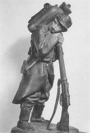
Gutfreund: Voják z roty Nazdar
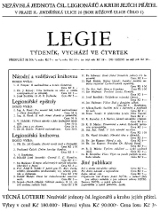
Dobová reklama na publikace o československých legiích a legionářích
|
Jaroslav Hašek: Osudy dobrého vojáka Švejka za světové války
Haškův román je sledem absurdních situací, jejichž původcem je nevyzpytatelný voják Švejk. Charakter této postavy je velmi těžko uchopitelný, protože Švejk se většinou chová naprosto nečekaně. Po vyhlášení mobilizace se dobrovolně hrne do války. Jako moderní pikaro prochází blázincem, nemocnicí i vězením. Slouží u feldkuráta Katze, který ho prohraje v kartách, a nadporučíka Lukáše, kterého přivede do neštěstí. Když se zjistí, že pro něj ukradl plukovníkova psa, jsou oba odveleni na bojiště. Vyvrcholením Švejkových eskapád je složitá anabáze za svým plukem do Budějovic, když mu ujede vlak. Odsud se jeho marškumpanie přesouvá do Uher a míří dál na východní frontu. Zde si Švejk oblékne ruskou uniformu, je zajat rakouskými vojáky a hrozí mu poprava, ale nakonec se vše vysvětlí.
Jádrem Haškova románu byly povídky Dobrý voják Švejk a jiné podivuhodné historky, které vznikly už před začátkem 1. světové války, a próza Dobrý voják Švejk v zajetí, která vznikla za autorova pobytu v Rusku. Nedokončený román se pokusil dopsat Karel Vaněk, ale s nevalným výsledkem.
Jaroslav Hašek: Dějiny strany mírného pokroku v mezích zákona
Strana mírného pokroku v mezích zákona byla výplodem hospodské společnosti kolem Jaroslava Haška. Vznikla roku 1911 jako parodie na skutečné politické strany a vedení politického boje. Strana mírného pokroku v mezích zákona pořádala různé osvětové přednášky a volební setkání, na kterých zaznívaly improvizované řečnické výstupy Jaroslava Haška a dalších členů. Podle svědků ale připomínaly spíše kabaretní monology. Své mystifikační texty shrnul Hašek do knihy Dějiny strany mírného pokroku v mezích zákona, která vyšla až roku 1962.
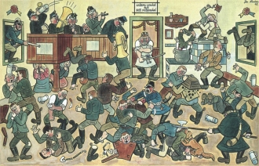
Lada: Hospodská rvačka
|
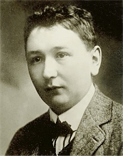
Proč je Švejk nejpřekládanějším českým románem?
Líbí se ti Haškův humor? Proč?
Charakterizuj postavu Švejka.
Je Švejk geniální blbec, nebo blbý génius?
Myslíš si, že Češi jsou národem švejků? Proč?
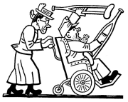
Lada: Švejk
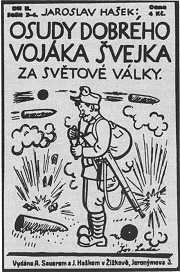
Obálka prvního vydání Haškova Švejka
Srovnej chování dnešních politiků s Haškovou satirou.
Jak si Hašek počínal v redakci Světa zvířat?
Kdy získaly ženy volební právo v USA, Německu, Velké Británii, Rusku, Československu a Švýcarsku?
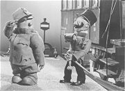
Animovaná adaptace Švejka od Jiřího Trnky
|
Rudolf Medek (1890-1940)
Medek se narodil v Hradci Králové a zemřel v Praze. Byl otcem malíře Mikuláše Medka a spisovatele Ivana Medka. Pracoval jako učitel. Narukoval na východní frontu, kde přeběhl k Rusům a později vstoupil do čs. legií. Po válce byl ředitelem Památníku odboje, který pečoval o odkaz legií, a dosáhl hodnosti generála.
Je autorem básně Zborov, románové pentalogie Anabáze, dramatu Plukovník Švec nebo vzpomínek Pouť do Československa.
|
Rudolf Medek: Zborov
Básnická skladba Zborov vyšla poprvé v Rusku. Oslavuje hrdinství českých legionářů při jedné z nejslavnějších bitev, kterými museli projít na východní frontě. Sám autor se bojů u Zborova neúčastnil.
|
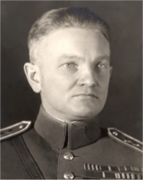
Co víš o bitvě u Zborova?
Kdo byl plukovník Švec?
Co je pentalogie?
Co popisuje Anabáze?
|
Josef Kopta (1894-1962)
Kopta se narodil v Libochovicích a zemřel v Praze. Byl otcem písňového textaře Pavla Kopty. Narukoval na východní frontu, dostal se do ruského zajetí a vstoupil do legií. Je autorem populární románové trilogie z legionářského prostředí Třetí rota, Třetí rota na magistrále a Třetí rota doma nebo psychologické prózy Hlídač č. 47.
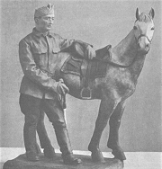
Gutfreund: Československý legionář
|
Josef Kopta: Třetí rota
Román Třetí rota vypráví o osudech československých legionářů z 3. roty. Dobrovolníci bojují po boku ruských vojáků na východní frontě. Rota má první padlé a raněné. Po pádu cara začíná revoluce, ale demokratickou vládu Kerenského smete bolševický převrat. Lenin usiluje o separátní mír s Německem, což se legionářům nelíbí. V Rusku navíc vypukne občanská válka. Masaryk chce, aby si legie uchovaly neutralitu a přemístily se na západní frontu, ale někteří legionáři se přidávají k bolševikům a další proti bolševikům bojují. Po transsibiřské magistrále se vojáci postupně přemísťují na východ a míří do Vladivostoku.
Další dva díly Koptovy trilogie Třetí rota na magistrále a Třetí rota doma popisují putování legionářů domů a deziluzi, kterou zažívají po návratu do samostatného Československa.
|
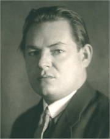
Jaký je tvůj názor na čs. legionáře?
Charakterizuj jazyk ukázky.
Co si myslíš o plánech popsaných v ukázce?
Jaký je tvůj názor na terorismus a teroristy?
Co je teror?
Porovnej vylíčení Jaroslava Haška v ukázce s tím, co o něm víš z jiných zdrojů.
|
Jaromír John (1882-1952)
John, vlastním jménem Bohumil Markalous, se narodil v Klatovech a zemřel v Jaroměři. Pracoval jako středoškolský učitel. Narukoval na jižní frontu, kde ochrnul na obě nohy. Po válce se stal redaktorem nakladatelství Orbis. Zabýval se rovněž estetikou.
Pro jeho prózy je typická dokumentárnost. Válečné zážitky zobrazil v knihách Listy z vojny, jež psal jsem svému synovi a Večery na slamníku. Pro děti převyprávěl Příběhy dona Quijota. V povídce Rajský ostrov zachytil okolnosti stavby Národního divadla. Věnoval se též psychologické próze.
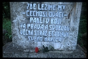
Pomník padlým legionářům ve Vladivostoku
|
Jaromír John: Večery na slamníku
Do sbírky povídek Večery na slamníku zařadil autor své starší texty s náměty z 1. světové války, které vyšly časopisecky nebo v samostatných knižních souborech. John usiloval o dokumentárnost a autentičnost. Do svých povídek vkomponoval skutečné dopisy, také jejich jazyk vychází z běžné mluvy vojáků.
Další autoři a jejich díla
Vladislav Vančura: Pole orná a válečná
Jaroslav Kratochvíl: Prameny, Cesta revoluce
Josef Váchal: Malíř na frontě
Božena Benešová: Úder, Podzemní plameny, Tragická duha
Fráňa Šrámek: Žasnoucí voják, Listy z fronty
František Langer: Jízdní hlídka, Železný vlk, Pes druhé roty, Snílci a vrahové
Karel Konrád: Rozchod!
|
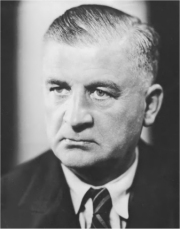
Charakterizuj jazyk Johnovy povídky.
Co byly kohoutky?
Převyprávěj tuto povídku svými slovy.
Poznámka: Po roce 1948 byli legionáři pronásledováni komunistickým režimem. Zasloužených poct se jim znovu dostalo až od roku 1989.
|
Internetové stránky
Hašek
Hašek: Osudy dobrého vojáka Švejka za světové války
Hašek: Dobrý voják Švejk v zajetí
Kučera: Švejk, článek
Hašek
Haškovy povídky
Černoušek: U České koruny, článek
Medek
Československé legie
Československá obec legionářská
Deník legionáře Josefa Holuba
Military postcards by Vojtech Preissig
Exkurze
Lipnice nad Sázavou
Filmy
Dobrý voják Švejk, Poslušně hlásím, režie K.Steklý
Osudy dobrého vojáka Švejka, režie J.Trnka
|
Doporučená četba
Blažíček, Přemysl: Haškův Švejk, Praha 1991
Deník plukovníka Švece, Za svobodu, Praha 1929
Dějev, Platon: Výtvarníci legionáři, Československý legionář, Praha 1937
Fidler, Jiří: Zborov 1917, Jota, Brno 2003
Hájek, Jiří: Jaroslav Hašek, Melantrich, Praha 1983
Hašek, Jaroslav: Dekameron humoru a satiry, 1968
Hašek, J.: Dějiny strany mírného pokroku v mezích zákona, ČSS, Praha 1977
Hašek, J.: Osudy dobrého vojáka Švejka za světové války, Naše vojsko, Praha 1954
Hašek, J. a druzí: Větrný mlynář a jeho dcera, Kabaretní scény a hry, ČSS, Praha 1976
Honzík, Miroslav: Legionáři, Novinář, Praha 1990
Jankovič, Milan: Umělecká pravdivost Haškova Švejka, Praha 1960
Lada, Josef: Kronika mého života, ČSS, Praha 1986
Lidský profil Jaroslava Haška, Korespondence a dokumenty, ČSS, Praha 1979
Pichlík, Klípa, Zabloudilová: Českoslovenští legionáři (1914-1920), Mladá fronta, Praha 1996
Plachetka, Jiří: Švejkův breviář, Adonai, Praha 2002
Pytlík, Radko: Jaroslav Kratochvíl, Academia, Praha 1980
Pytlík, R.: Kniha o Švejkovi, ČSS, Praha 1983
Pytlík, R.: Zpráva o Jaroslavu Haškovi, Toulavé house, Panorama, Praha 1982
Sak, Robert: Anabáze, H&H, Jinočany 1996
Sebrané spisy Jaroslava Haška (16 svazků)
Soldán, Ladislav: Jaroslav Hašek, Praha 1982
Šmahelová, Helena: Vzpomínky na Jaromíra Johna, Albatros, Praha 1979
Tvar, 2003/8 (Hašek: Májové výkřiky)
|
Vypracuj písemný referát o některé z uvedených knih.
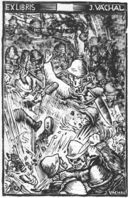
Váchalovo ex libris k jeho knize Malíř na frontě
|
|